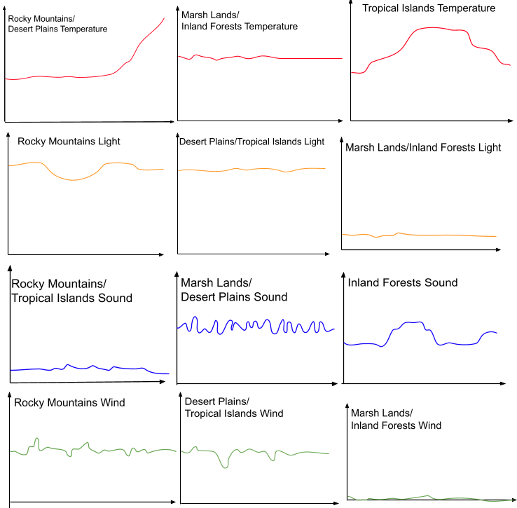
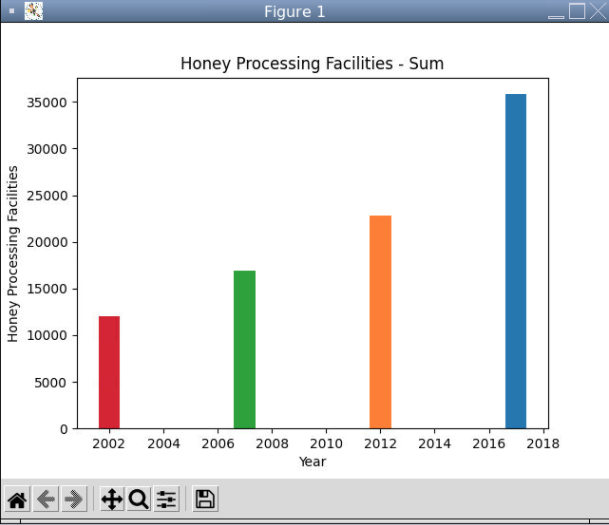

home
portfolio about metammy's portfolio
1.1.9 Project - Burger Restaurant


This project involved creating a burger based on input provided by the program user.
The user is able to select customizations for the bun, the patty, the cheese type, the condiments, and vegetables.
In addition, the user can specify the amount of vegetables they would like in their burger.
If a user enters in an invalid answer, the program shuts down and forces the user to rebuild their burger.
The program utilized the register shape function to allow for the use of complex images for the burger ingredients.
1.2.5 Project - Tug-of-War

This project was based off of the game of tug-of war.
This game requires two players, who will each attempt to pull a "rope" in a specified direction by pressing either the left or right arrow keys.
When one of the players moves the rope over to a certain threshold, the player wins the match and the game ends.
After a player wins the game, the screen displays the elapsed time of the match, the name of the winning player, and two buttons that allow the users to either exit the game or view the leaderboard.
Data abstraction was used in the creation of the leaderboard portion of the program so as to organize the code and improve its readability.
Functions were also especially helpful in defining how the users would control the rope, as well as displaying the ending screen.
Scratch Project - Dance Arena 1v1!

This project was based off of the game "Dance Dance Revolution".
It involves pressing arrow keys according to the beat of a song in order to earn points.
When the game begins, the user can choose to read the instructions before playing, as well as decide between two songs to play to.
If the player presses the arrow keys at the right time, they will earn 100 points, as well as additional "combo" points for the correct arrows they press in a row.
After the song ends, the screen displays whether or not the player won the game, as well as their accuracy.
Costume changes, procedures, and relational/boolean operators were essential in making the "players" dance, moving the arrows, and grading the player's accuracy.
3.1.6 Project - Rover Phone Home

This project involved the analyzation and comparison of data in order to determine a rover's location.
There were 5 possible terrains in which the rover could be located - Rocky Mountains, Desert Plains, Marsh Lands, Inland Forests, and Tropical Islands.
The rover collected sound, pressure, temperature, and light data that could be used to deduce the biome in which it was located.
Sample graphs were made to visualize what each biome's data would potentially look like, in addition to graphs made based on the rover's data.
After comparing the sample graphs with the rover data graphs, the Rocky Mountain terrain seemed like the best fitting answer.
The temperature in the Rocky Mountains began with rather low values, then increased significantly over a short period of time.
The graph of the sound did not fluctuate much, signifying the low constant howl of wind present in the Rocky Mountains.
The light values in the Rocky Mountains were relatively constant, which correlated to the bright light in the Rocky Mountains' description.
Lastly, the wind did not vary much in the Rocky Mountains, which corresponds to the graph of the wind pressure created.
3.2.4 Project - Making Meaning from Data

This project involved the analysis of data from the USDA regarding honey collection in various states.
Through the extraction and visualization of the data, the effect of disappearing bee colonies in the United States on honey production became apparent.
The significance of a rising number of honey processing facilities was also made evident in the data analysis.
Based on the data, the conclusion was made that honey production was declining rapidly after 1997 as a result of dying bee colonies.
However, the increased construction of processing centers allowed for the honey production to stay at a relatively static rate in the following years.
The visualization of data was made possible through the Python graphing library, as well as a data processing library.
4.1.4 Project - Understanding Complex Systems
This project involved the use of simulations to represent real-world situations.
Specifically, the simulation analyzed was on the topic of bacterial resistance against antibiotics.
Depending on the rate and strength of the antibiotic dosage, there is a possibility for bacteria to develop immunity against the antibiotics and pass on the trait to their offspring.
The new presence of stronger bacteria greatly reduces the efficacy of the antibiotics, putting the afflicted patients’ health at risk.
Illnesses due to antibiotic resistance is an especially prevalent issue in today’s world, and it greatly impacts the healthcare system.